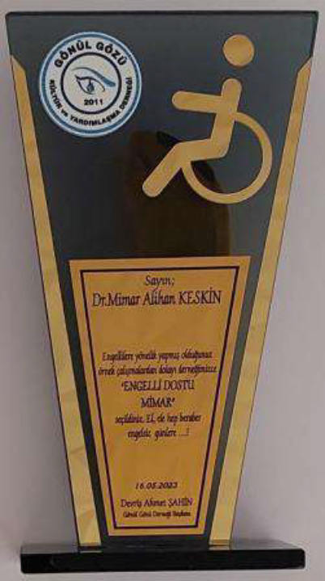
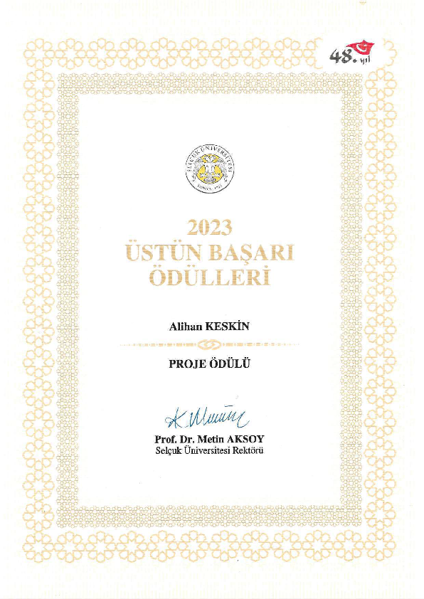
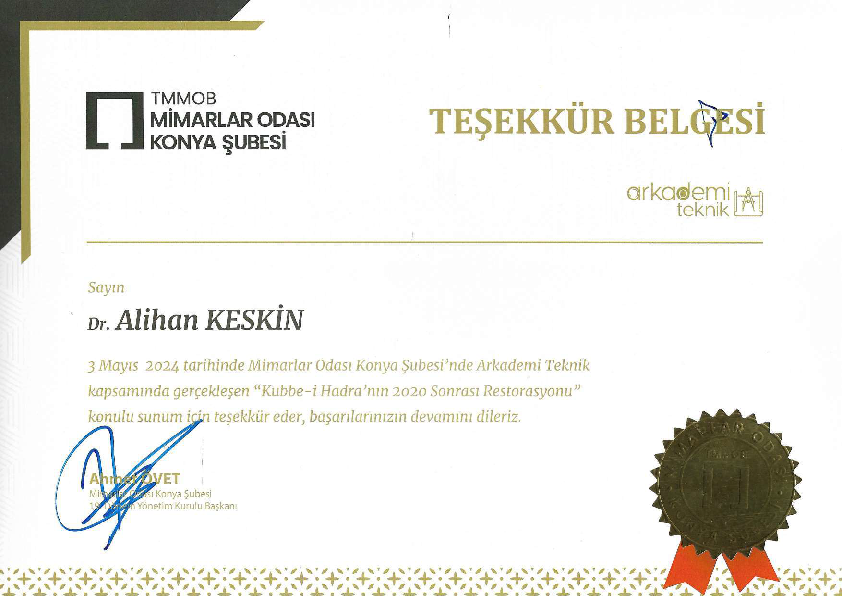

Dr. Alihan Keskin
Mimar
7. ÖDÜLLER (Yayın teşvikleri hariç)
7.1. Alanında ulusal bilimsel veya sanatsal nitelikli ödül almak
7.1.1. Keskin, Alihan. (16.05.2023).
Engelli Dostu Mimar Ödülü. 2023 Engelli Dostu Ödülleri.
Konya, Türkiye: Gönül Gözü Kültür ve Yardımlaşma Derneği.

7.1.2. Keskin, Alihan. (13.07.2023).
Proje Ödülü. 2023 Üstün Başarı Ödülleri.
Konya, Türkiye: Selçuk Üniversitesi.

7.1.3. Keskin, Alihan. (03.05.2024).
Teşekkür Belgesi. 2024 Arkademi Teknik Sunumları.
Konya, Türkiye: TMMOB Mimarlar Odası Konya Şubesi.
